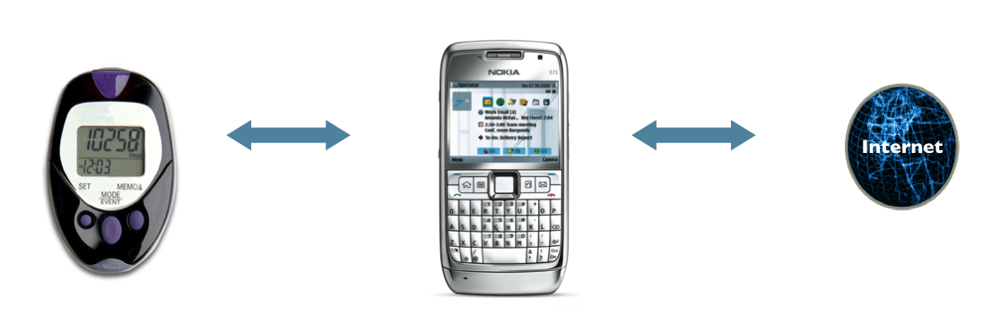
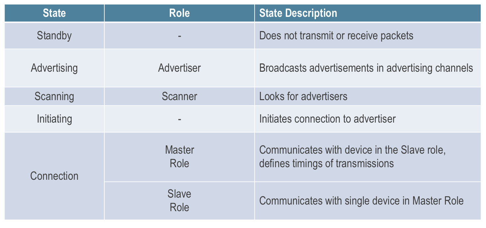
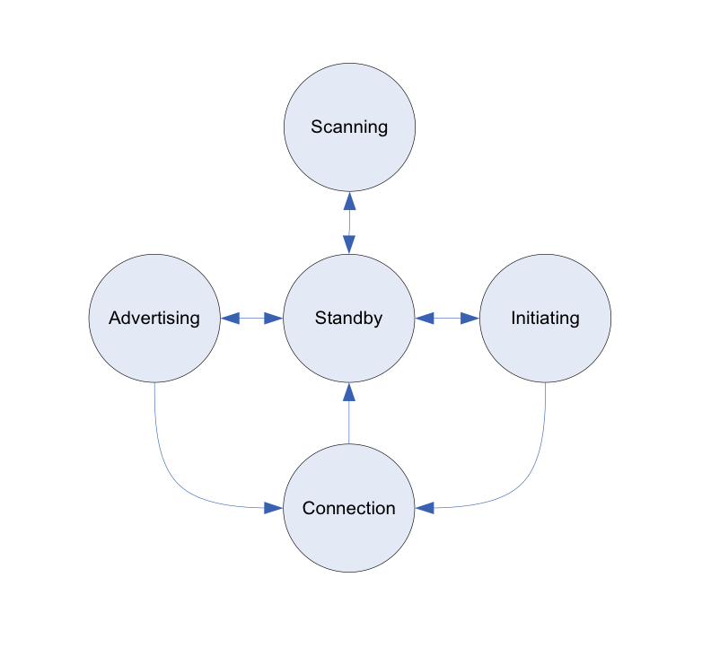
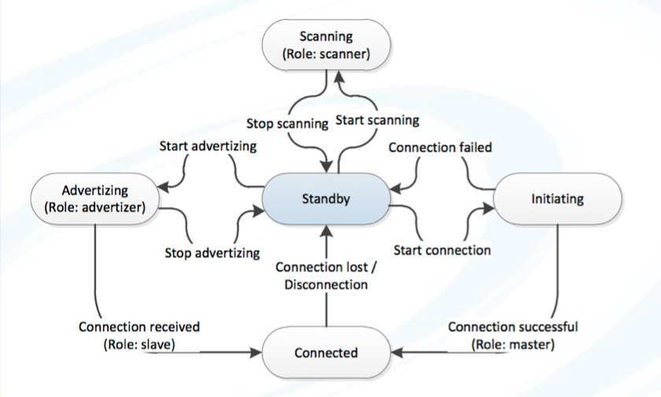
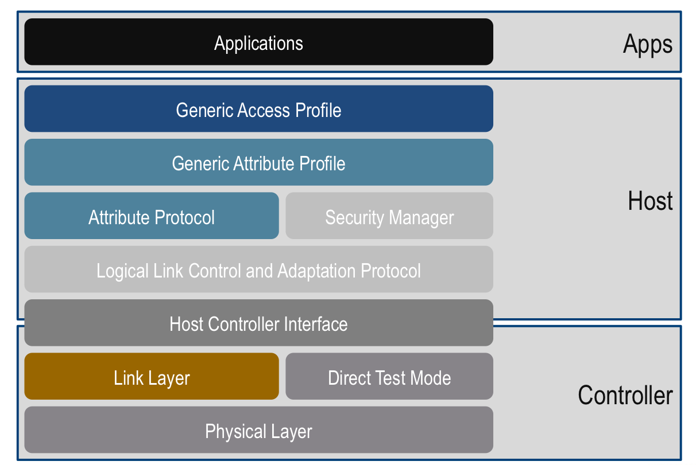
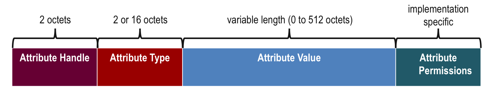
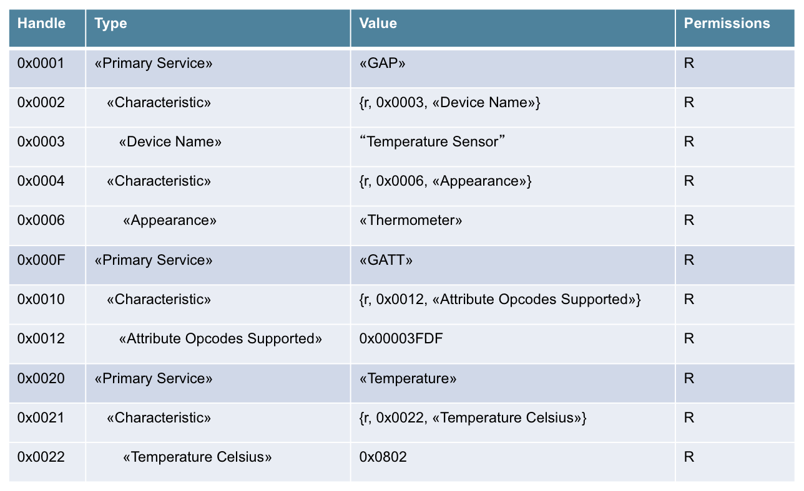
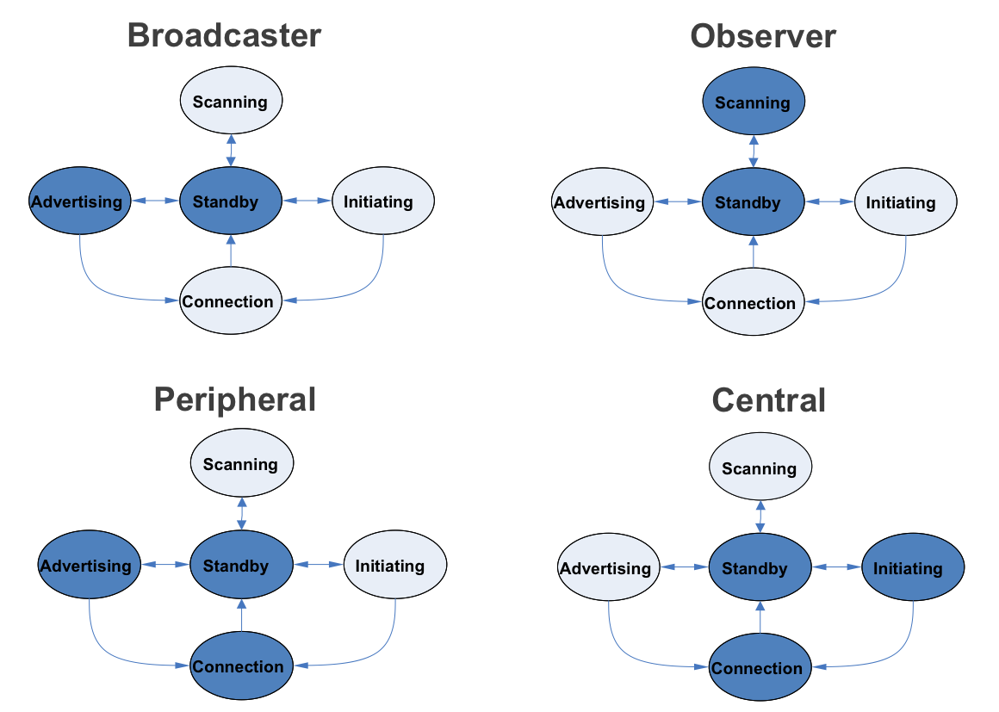

Bluetooth
Low Energy
Criada por Felipe dos Santos e Tiago Marcos Alves
Agenda
- História (10min)
- Arquitetura (10min)
- Casos de uso (5min)
History
90s
- 1994 - Ericsson
- 1997 - Nome do Bluetooth
- 1998 - SIG fundado por Ericsson, Intel, Nokia, IBM e Toshiba
- 1998 - SIG atinge 400 membros
- 1999 - Bluetooth 1.0

Past decade
- 2000 - Primeiro telefone e PC
- 2002 - v1.1 - padrão IEEE
- 2003 - v1.2 - Mais rápido
- 2004 - v2.0 - EDR
- 2007 - v2.1 - Pareamento + Segurança
- 2009 - v3.0 - HS (baseado no Wi-Fi)
Current decade
- 2010 - Bluetooth Smart (v4.0)
Classic Bluetooth, Bluetooth high speed and Bluetooth low energy - 2011 - Grandes fabricantes de dispositivos começam a suportar a v4 (Apple e Microsoft)
- 2013 - v4.1 - Internet Of Things
Smart e Low Energy
- Custo baixo, em torno de $1 por chip
- Alcance de 100 metros
- Licença é gratuíta
- Criptografia 128 bit AES CCM
- Pico máximo de 15µa e média de 1µa, possibilitando 2 anos de uso

Arquitetura
Basico
- Arquitetura Cliente/Servidor
- Gateways Conectam dispositivos BLE com a internet

Estados e papéis

Estados

Maquina de estados

Pilha da arquitetura

Generic Attribute Profile ou GATT

Agrupamento GATT

Generic Access Profile ou GAP
- Define perfis de papéis
- Broadcaster
- Observer
- Peripheral
- Central
- Define procedimentos
- Descoberta de identidades, nomes e possibilidades básicas
- Cria vínculo
- Troca de informações de segurança
- Estabelece conexões
- Resolve endereços
Perfis GAP
